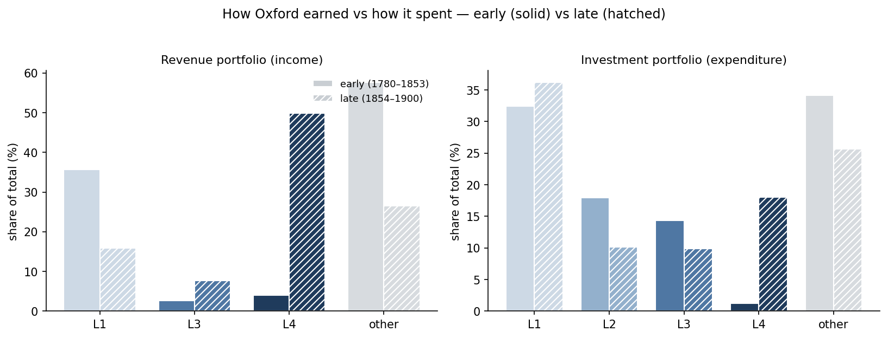
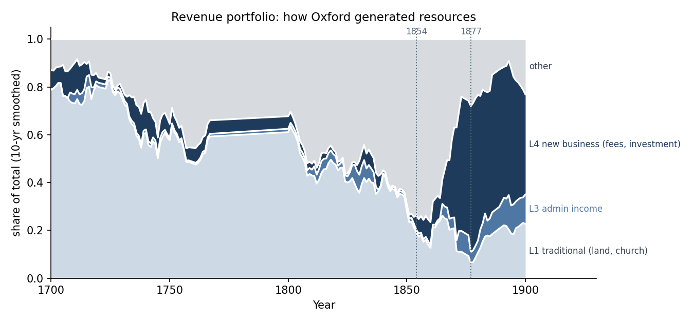
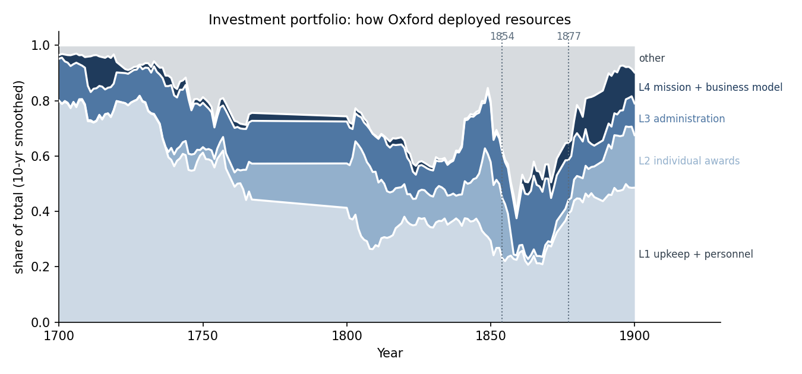
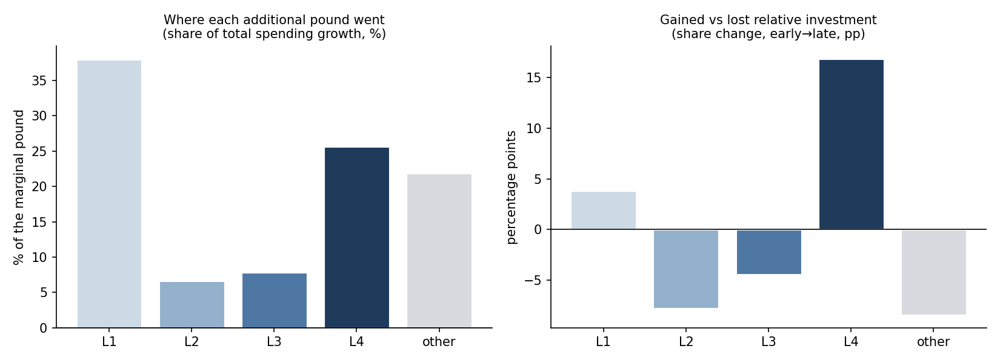
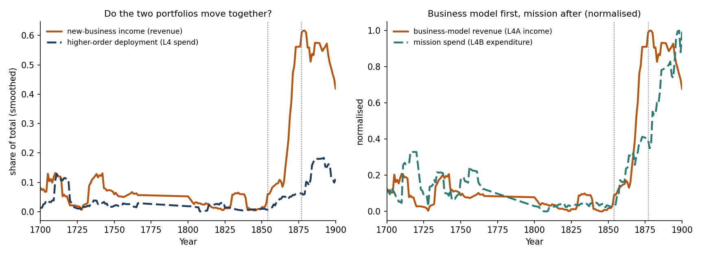

Every organisation with limited resources must choose how much to invest in automation, personalisation, operational innovation and business-model innovation. Oxford is a rare case where we can watch both sides of that choice: how the college generated resources and how it deployed them. This note builds the two portfolios, studies the reallocation, and connects them.
Full Oxford ledger corpus, 1700–1900 (1,581 pages), entry-level rows
tagged by economic category and direction, all money deflated to constant pounds. Each level is an
annual share of income or of expenditure, built from one rule fixed in the coding
protocol. Both sides are first cleaned the same way: opening and closing balances,
arrears, carry-forwards, aggregate "total" rows, recorded losses and one-off asset sales are
book-keeping entries, not real money in or out, and are removed (about 75% of income and 87% of
spending kept). Every number is reproduced by analysis_v15.py.
Coverage note: the eighteenth-century bands rest on sparse data (only 16 of the 50 years 1750–1799 have records); the dense, reliable period is 1800–1900, where the story sits.

We classified every genuine income line into the four levels. Revenue does not fill all four evenly — personalisation and operational innovation are ways of spending, not earning — so the real shape is traditional versus new business.
| Era | L1 traditional (land, church) | L2 | L3 admin | L4 new business (fees, investment) | other |
|---|---|---|---|---|---|
| 1700–1779 | 66.7 | 0.0 | 1.6 | 7.3 | 24.4 |
| 1780–1819 | 48.8 | 0.0 | 3.2 | 2.9 | 45.1 |
| 1820–1859 | 33.6 | 0.0 | 2.7 | 3.4 | 60.3 |
| 1860–1900 | 18.6 | 0.0 | 7.2 | 42.7 | 31.5 |
The revenue model changed only in the last era, and it changed sharply. Traditional land-and-church income falls steadily from about two-thirds to under a fifth. New-business income sits at a few per cent for a century and a half, then jumps to 42.7% after 1860, driven by the sale of education for fees. Personalisation (L2) generates essentially no revenue: it is a way of spending, not earning. So Oxford moved from living on its endowment to earning from a new activity, within a single generation.
Timing of the new revenue. Both new sources exist as occasional entries much earlier (a securities line in 1709, a fee line in 1700), but they only become a sustained revenue model late: the emergence change-point is 1870 for fees and 1889 for investment income, and a change-point test on the whole new-business income share dates the break to 1870 (a very sharp break, t = 14). The new revenue model is a phenomenon of the reform decades, not of the eighteenth century.
A note on "other": with the current data categories, roughly a third of income (more in the mid-1800s) is miscellaneous receipts we cannot assign to a level. If we set that part aside and look only at the income we can classify, the shift is even clearer — new-business income rises from about 10% to 62%, while traditional falls from about 88% to 29%. So the traditional-versus-new story does not depend on how we handle the leftover.

The same exercise for expenditure, with every category assigned so the shares sum to one.
| Era | L1 upkeep + personnel | L2 awards | L3 admin | L4 mission + business | other |
|---|---|---|---|---|---|
| 1700–1779 | 67.1 | 2.0 | 14.7 | 3.7 | 12.4 |
| 1780–1819 | 30.6 | 24.3 | 14.1 | 2.0 | 29.0 |
| 1820–1859 | 33.1 | 13.9 | 14.6 | 0.9 | 37.5 |
| 1860–1900 | 37.8 | 9.2 | 15.4 | 10.0 | 27.6 |
Deployment shifts too, but much more modestly than revenue. Higher-order spending (L3 + L4) runs 18% → 16% → 15% → 25%: a real rise late, driven by L4 rising from about 1% to 10% (a change-point dates the L4-spending break to 1860). Here L4 covers two things — money put into investments and money spent on the teaching mission — and it grows only in the last era. But the college still spends most of its money the old way: upkeep and personnel (L1) remain the largest block at about 38%, and administration (L3) is flat at ~15% throughout. So spending moves in the same direction as revenue, but far less sharply.
On the "other" block (about 28% late): as with income, some spending lines carry no clear category in the data (general or unspecified payments, internal transfers between funds). We keep them visible as "other" rather than force them into a level.
Correction from the first draft: an earlier version counted the whole "financial" spending category as L4 investment, which inflated L4 deployment to ~30% by including accounting artefacts (aggregate totals, carried-forward balances, recorded losses). Restricting L4 to genuine investment purchases and cleaning those artefacts brings it to ~10%. The revenue figures are unaffected.

Rather than raw growth, we ask where the extra money went. Comparing spending per year, early (1780–1853) versus late (1854–1900):
| Level | Share of the marginal pound | Relative share change (pp) |
|---|---|---|
| L1 upkeep + personnel | 38.0% | +3.8 |
| L4 mission + business | 25.7% | +16.8 |
| other | 21.9% | −8.4 |
| L3 admin | 7.8% | −4.5 |
| L2 awards | 6.6% | −7.8 |
The largest share of new spending simply scaled the old operation: 38 pence of each additional pound went to upkeep and personnel (L1). But the next-largest share, 26 pence, went to L4 — and because L4 started from almost nothing, it is the level that gained by far the most in relative terms (+16.8 points of share). Personalisation, administration and the unclassified "other" all lost relative ground. So the marginal pound tells a two-part story: most of it kept the existing operation running at a larger scale, but the fastest-growing claimant was higher-order transformation.

This is the new question: did Oxford change how it earned and how it spent at the same time?
| Measure | Early (1780–1853) | Late (1854–1900) |
|---|---|---|
| New-business income share | 2.5% | 37.9% |
| Higher-order spend share (L3+L4) | 16.1% | 23.6% |
| Traditional land income share | 41.2% | 17.5% |
| Number of income sources that really mattered | about 2 | about 2 |
Oxford re-made how it earned far more than how it spent: the revenue side changed sharply, the spending side only gradually.

One limit to keep in mind: we do not try to pin down which side moved first year-by-year, because both change in the same short window and the measures are close. The one ordering we do rely on is that new-business revenue rises just ahead of mission spending.
The portfolios rest on judgment calls, so we re-computed the two headline numbers — the late-period (1860–1900) L4 share of income and of spending — under alternative choices. These use the same measure as the tables above, so they line up with them.
| Classification choice | L4 income % | L4 spend % |
|---|---|---|
| Our choice (base) | 42.7 | 10.0 |
| Count personnel pay as L3, not L1 | 42.7 | 10.0 |
| Skip the income cleaning step | 38.6 | 10.0 |
| Count all financial spending as L4 (the earlier error) | 42.7 | 30.3 |
| Count fees as personalisation (L2), not new business | 4.2 | 10.0 |
The numbers barely move when we reroute personnel pay or skip the income cleaning — so most choices do not affect the story. Two rows matter. The italic row shows the earlier mistake: counting all financial spending as L4 (rather than only real investment purchases) trebles the L4 spending share, from 10% to 30%. That is the error we corrected. And the last row shows the one choice the revenue story truly depends on: if fees are called personalisation rather than a new business, the new-revenue share collapses to 4%. We treat fees as new business because selling education for a price is a genuinely new way of earning. Either way, the core fact holds — Oxford replaced its old revenue source with a new one.
Oxford is one organisation that came through the last great technological upheaval still relevant. Three things about how it allocated its resources turn into concrete questions for a company investing in AI today.
A single case cannot prove what makes an organisation survive such a shift. But the pattern is clear and consistent: Oxford changed how it earned far more than how it spent, aimed its new spending at higher-order change, and funded that change with new income rather than old.